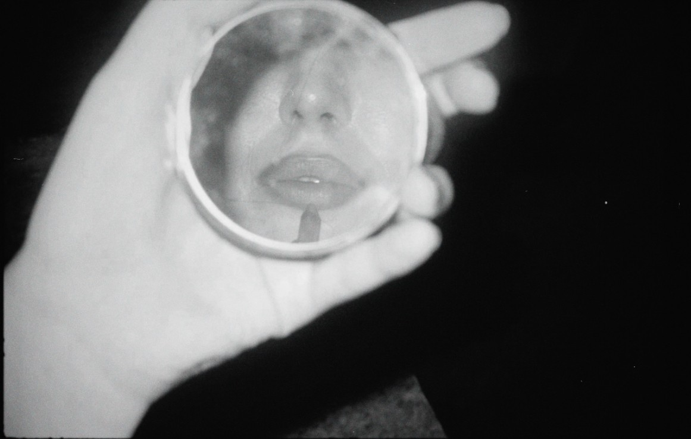

I studied biomedical science, then got a job in digital marketing and somehow ended up building software at a startup.

Peri01

I studied biomedical science, then got a job in digital marketing and somehow ended up building software at a startup.
Peri01

Which one is the lie?
Peri02
Experience
After digital marketing I moved into recruitment at Recruitcha, the recruitment agency, and taught myself to build software with AI tools. I started building our internal recruiting tools, and later took on product development and technical work on Recruitcha GTM, the software product.

Peri03
say hello
© 2026 Peri